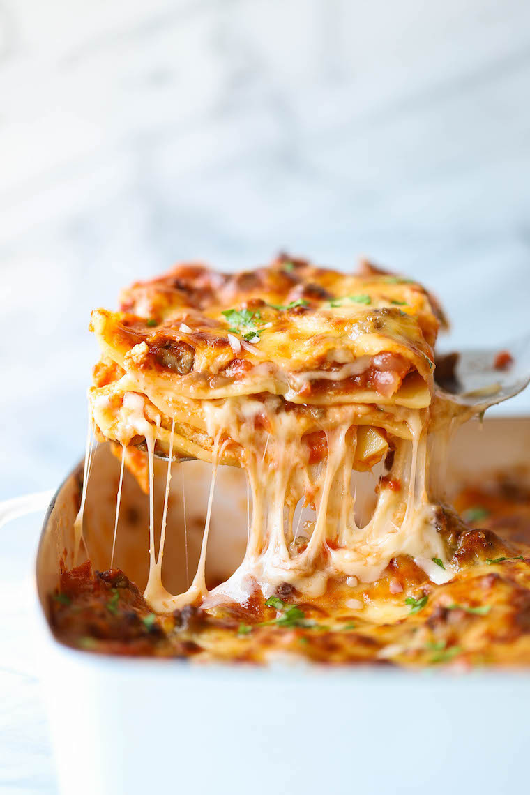

lasagna recipe

Beautiful, Quick, and Easy Lasagna Recipe that Everyone will Love!
This lasagna recipe is loved by many. It is so simple and delicious that your loved ones will be coming back for more.
The recipe consists of only six (yes, that is right 6!) total ingredients. It only needs about 35 min in the oven, and all of the parts of the lasagna can be made in about 20 minutes. I love that I can have dinner on the table within an hour without having to sacrifice flavor. I hope you enjoy!
Ingredients:
- meat sauce
- mozzarella cheese
- ricotta cheese
- parsley
- garlic
- pasta, of course!
Steps:
-
Start by mincing your garlic. You can use as much garlic as you wish! The more you have, the better this recipe will taste (imo).
-
Next, mix your mozzarella cheese, garlic, ricotta cheese, and chopped garlic together in one bowl.
-
While you do this, have your pasta soaking in warm water. This will allow the pasta to soften so it is easier to work with when adding layers.
-
Lastly, assemble your pasta! Coat the bottom of your pan with meat sauce. Add a layer of pasta on top. Next, add a layer of your ricotta mixture with a bit more cheese on top and top it with more meat sauce. Repeat the process of adding more ricotta, cheese, meat sauce, and pasta until your reach the top of your pan or run out of ingredients.
-
When finished assembling, add a a little of meat sauce to the top of the lasagna with cheese. Place in a 425 degree oven until golden brown on top. You may cover the top of the lasagna and uncover it halfway through if it starts to burn. I recommend leaving the lasagna in the oven for about 35-45 minutes.